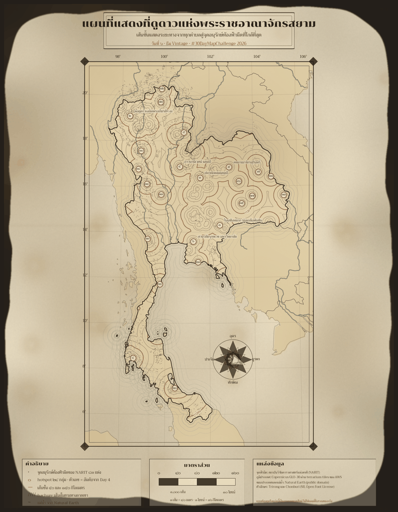
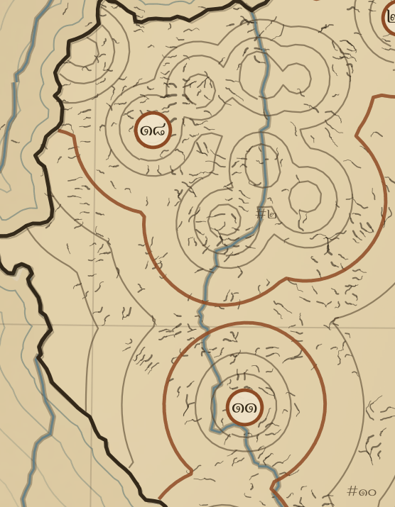
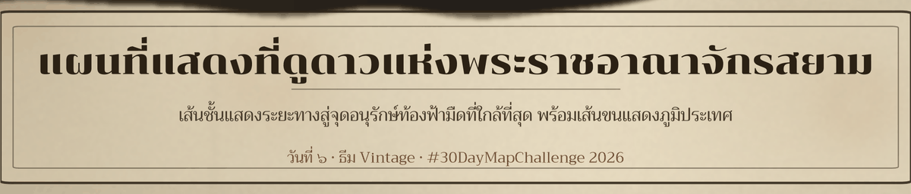
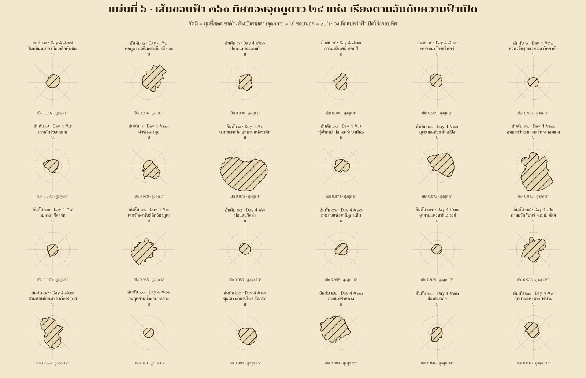
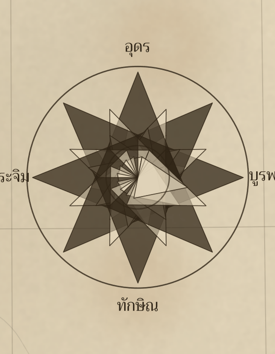

Day 6 · Vintage — hachure, เส้นชั้นแบบเขียนมือ และ compass rose บนแผนที่ฟ้ามืดไทย

Day 1 ปักจุด · Day 2 ลากเส้น · Day 3 วัดพื้นที่ · Day 4 จับกลุ่ม · Day 5 วัดสายตา วันนี้ธีมทางการ Vintage บอกว่า “do a map which looks like a historical map” — โจทย์ที่ผมตั้งไว้ก่อนเริ่มคือ ของเก่าตรงไหน? เพราะถ้าคำตอบคือ “ทำให้เป็นสีน้ำตาล + ฟอนต์เก่า” มันก็แค่ฟิลเตอร์ ไม่ใช่แผนที่โบราณ
ที่มาของแผนที่
คำว่า vintage ในชาเลนจ์นี้แยกได้สามทาง: สไตล์ (หน้าตาแผ่น), ข้อมูล (ตัวเลขเก่า), เทคโนโลยี (เครื่องมือเก่า) ผมลองเช็กทาง “ข้อมูล” ก่อน แล้วพบว่าทั้งสองทางเหลือบไปชนธีมวันอื่น (DMSP-OLS ยุค 90s ต้องสมัครบัญชี EOG ถึงจะโหลดได้, เส้นทางสุริยุปราคา 1868 ของ ร.4 NASA ยังไม่มี vector ให้ดึงตรง ๆ) จึงเลือกทาง สไตล์ แต่ทำให้ถึงกึ๋น: ใช้เฉพาะ notation ที่คนทำแผนที่ ก่อน พ.ศ. 2400 ใช้ได้จริง
สิ่งที่เปลี่ยนจากแผนที่สมัยใหม่ของผมเอง (ข้อมูลชุดเดิมเป๊ะ ๆ จาก Day 1–5):
| สิ่งที่วัด | เมื่อวาน (สมัยใหม่) | วันนี้ (ย้อนยุค) | ทำไมถึงถูกยุค |
|---|---|---|---|
| ภูมิประเทศ | เงาภูมิประเทศ (hillshade) จาก DEM | hachure — เส้นสั้น ๆ วาดตามทางลาดเขา | เป็นวิธีมาตรฐานก่อนยุค contour + colour band |
| ระยะทางสู่จุดฟ้ามืด | choropleth หกเหลี่ยม H3 | เส้นชั้น (isopleth) 10–150 กม. ที่เขียนให้มือสั่น | เส้นชั้นใช้กันก่อนยุคตารางหกเหลี่ยม |
| เส้นขอบฟ้า 360 ทิศ | polar plot สีนีออน | วงเส้นขอบฟ้า 24 วง ขีดลายทแยงแบบ engraving | วางในสไตล์ compass rose ของแผ่น atlas ยุคนั้น |
| มาตราส่วน | กิโลเมตร | เส้น / โยชน์ (40 ม. / 16 กม.) | หน่วยวัดไทยก่อนใช้เมตริก |
| กระดาษ | พื้นหลังเรียบ | กระดาษแก่ procedural + คราบรา + รอยพับ + ขอบฉีก | กระดาษเซลลูโลสแก่เหลืองจริง |
ว่าด้วยคำศัพท์ในโพสต์นี้ — ผมตั้งใจไม่แต่งคำไทยใหม่ครับ คำไหนมีศัพท์มาตรฐานก็ใช้ (เส้นชั้นความสูง, เงาภูมิประเทศ, แผนที่ภูมิประเทศ) คำไหนไม่มีก็เรียกทับศัพท์ไปเลยแล้วอธิบายต่อ เพราะ hachure กับ compass rose ไม่มีศัพท์ไทยที่ราชบัณฑิตฯ หรือตำราไทยใช้กันจริง ใครรู้จักคำที่วงการแผนที่ไทยใช้กว่านี้บอกได้ ผมแก้ทั้งโพสต์และบนแผ่นให้
มีอยู่อย่างหนึ่งที่ ตั้งใจ ไม่เลียนแบบ: แผนที่โบราณมักวาดภูมิประเทศ “ตามรู้สึก” — ของผมทุกเส้น hachure มาจาก DEM จริง (Copernicus GLO-30) และทุกเส้นชั้นมาจาก distance field จริง บนแผ่นจึงมีหมายเหตุเล็ก ๆ กำกับไว้ว่า “แบบย้อนยุคในแผ่นนี้เป็นงานออกแบบใหม่ ไม่ใช่แผนที่โบราณของจริง”
ผลลัพธ์

ดาวน์โหลดแผ่นเต็ม 1700×2185 px · ไฟล์เส้นหมึก SVG สำหรับ plotter


ตัวเลขบนแผ่นวันนี้: 3,664 เส้น hachure จาก 4,884 จุดตั้งต้นที่ความชัน ≥ 4°, 181 ช่วงเส้นชั้น 7 ระดับ, 83 จุด NARIT, 24 วงเส้นขอบฟ้า (เรียงตามอันดับความฟ้าเปิด) และ 1 เข็มทิศในอ่าวไทย (อุดร–บูรพา–ทักษิณ–ประจิม)
ตัวเลขในวงกลมบนแผ่นคือ อันดับความฟ้าเปิด (open-sky rank) — ๑ คือเห็นฟ้ากว้างที่สุด (โนนขันหมาก 0.997) เรียงไปจน ๒๔ คือจุดที่ถูกบังมากที่สุด (อุทยานแห่งชาติศรีน่าน 0.818) ส่วนตัวเลขเล็ก ๆ ต่อท้ายคือ #NN = อันดับขนาดกลุ่มจาก Day 4 (เช่น #๙ คือกลุ่มที่ 9 ตามขนาด) ไม่ใช่ label ที่ DBSCAN ตั้ง ซึ่งคนละเลขกัน โดยเข้าใจว่าเป็น “id ของจุด” — แต่บนแผนที่ เลขคือ ranking ในสายตาคนอ่านเสมอ ดูบทเรียนข้อสุดท้าย ส่วนชื่อที่พิมพ์บนแผ่นมีเฉพาะ 6 จุดฟ้าเปิดที่สุด เพื่อไม่ให้แผ่นรกเกินแบบ atlas จริง


ของที่ได้เพิ่มมาจริง ๆ ไม่ใช่ความสวย แต่คือ แผ่นวงเส้นขอบฟ้า ซึ่งยืนยันข้อสรุปของ Day 5 แบบมองปุ๊บเข้าใจปั๊บ: จุดที่ฟ้า มืดที่สุด บางแห่งมีเส้นขอบฟ้า แย่ที่สุด เพราะอยู่ในหุบเขา — วงที่ปูดเป็นก้อนคือ อุทยานแห่งชาติศรีน่าน (open-sky 0.818 · มุมสูงสุด 29.9°) และฮ่อมลมจอย (0.846 · 34.5°) ส่วนวงเล็กกลมนั้นคือที่ราบ/ชายทะเลที่เห็นฟ้าเกือบครบโดม

close-up อีกหนึ่งจุด — ดาวบอกทิศในอ่าวไทยกับเส้นชั้น 50 กม. ที่วิ่งเลียบชายฝั่ง:

วิธีทำแบบย่อ
ขั้นที่ 1: เดิน fall-line บน DEM ที่เกลี่ยแล้ว ไม่งั้นได้ก้นหอย
hachure คือเส้นสั้น ๆ ที่ไหลลงตามความชัน ผมเริ่มจาก gradient ของ terrarium tile (z=9, ~306 ม./px) แล้วเดินทวน gradient ทีละ 2.6 พิกเซล ปรากฏว่าเส้นที่ได้ ม้วนเป็นวง — วัดออกมา straightness (ระยะปลาย–ต้น หารด้วยความยาวเส้นทาง) ได้แค่ 0.20 สาเหตุคือ noise ต่อพิกเซลของ GLO-30 ทำให้ทิศ gradient ส่ายไปมาในบริเวณที่ราบ
แก้ด้วยการเกลี่ย DEM ด้วย Gaussian ก่อนหา gradient + หยุดเมื่อทิศทางกลับด้าน (แปลว่าถึงตีนเขาแล้ว):
smooth = gaussian_filter(np.nan_to_num(DEM, nan=0.0), 2.0) # ~600 ม.
g_row, g_col = np.gradient(smooth)
gx = g_col / row_res[:, None] # row_res = เมตร/พิกเซล ตามละติจูดของแถวนั้น
gy = g_row / row_res[:, None]
slope = np.degrees(np.arctan(np.hypot(gx, gy)))
ok = LAND & (slope >= 4.0) # seed lattice ทุก ~4.5 กม.
for c0, r0 in zip(cs, rs): # เดินลงเขาทีละ seed
c, r = c0, r0; pts = [(c, r)]; pc, pr = c, r; last = None
for _ in range(max_len):
i, j = int(round(r)), int(round(c))
L = math.hypot(gx[i, j], gy[i, j])
if L < 1e-9: break
dc, dr = -gx[i, j] / L, -gy[i, j] / L
if last is not None and dc * last[0] + dr * last[1] < 0.2:
break # ทิศกลับ = ลงมาถึงเชิงเขาแล้ว เลิกเส้น
c += dc * step_px; r += dr * step_px
if not LAND[int(round(r)), int(round(c))]: break
pts.append((c, r)); last = (dc, dr)
# เก็บเฉพาะเส้นที่ยาวพอและ "ตรง" พอ (straightness > 0.55)
if len(pts) < 7: continue
if math.hypot(c - pc, r - pr) < 0.55 * len(pts) * step_px: continue
strokes.append(pts)ขั้นที่ 2: เส้นชั้นที่เขียนให้มือสั่น จาก KD-tree
ระยะทางสู่จุดฟ้ามืดที่ใกล้ที่สุดไม่ต้องคำนวณใหม่ — ใช้ cKDTree บน 83 จุดพิกัด (หน่วย กม. แบบ equirectangular) query ทั้งกริดแล้ว contour เอาเฉพาะเส้น (ไม่ fill) ส่วนลายมือสั่น ทำใหม่ด้วยการ resample เส้นทุก 5 กม. แล้วเลื่อนจุดตามเส้นตั้งฉากด้วย noise เรียบ (ผลรวม sine 3 ความยาวคลื่น) เพื่อให้เส้นอืดเหมือนปากกา ไม่สั่นแบบ white noise:
def wobble(P, amp_m=2200.0, res_m=6000.0, seed=0, close=False):
P = np.asarray(P, float)
if len(P) < 3: return P
if close: P = P[:-1]
seg = np.hypot(*np.diff(P, axis=0).T)
cum = np.concatenate([[0], np.cumsum(seg)])
n = max(int(cum[-1] / res_m), 6)
ds = np.linspace(0, cum[-1], n)
Q = np.column_stack([np.interp(ds, cum, P[:, 0]), np.interp(ds, cum, P[:, 1])])
d = np.gradient(Q, axis=0); L = np.hypot(d[:, 0], d[:, 1]) + 1e-9
Q = Q + np.column_stack([-d[:, 1] / L, d[:, 0] / L]) * smooth_noise(n, amp_m, seed)[:, None]
return np.vstack([Q, Q[:1]]) if close else Qเส้น index (50/150 กม.) ระบายสีสนิม + ตัวเลขกำกับเป็นเลขไทย (๕๐, ๑๕๐) พร้อม halo สีกระดาษ ให้เหมือนหมึกกันเส้นขาดตอน
ขั้นที่ 3: กระดาษแก่สร้างด้วย noise ล้วน (ไม่มี texture ไฟล์จากที่อื่น)
ผมจงใจไม่โหลดภาพกระดาษมาจากที่ใดเลย ทั้งสวยกว่าและไม่ต้องกังวลสิทธิ์: noise ต่ำความถี่ (มอตลิง) + จุดรา 36 ดวงแบบวงแหวน + รอยพับ 2 แนว + vignette + ขอบฉีก ด้วย superellipse กำลัง 9 ที่รัศมีถูกบิดด้วย sine หลายความถี่ แล้วทบทับหมึกด้วยชั้น stain โปร่งแสง (คราบเหลืองจาง ๆ ทับเส้นหมึก) เพื่อให้สี “จม” ลงในกระดาษ ไม่ใช่ลอยอยู่ข้างบน
p_ = 9.0 # superellipse -> sheet with rounded torn corners
inside = (((np.abs(x - W / 2) / rx) ** p_) + (np.abs(y - Hh / 2) / ry) ** p_) <= 1.0
alpha = np.clip(gaussian_filter(inside.astype(float), 1.8) * 1.04, 0, 1)ขั้นที่ 4: projection + cartouche + มาตราส่วนไทย
ผมเลือก Equidistant Conic (lat₁=8°, lat₂=20°, lon₀=101°) เพราะเส้นขนานเป็นวงโค้ง กับเส้นลองจิจูดบรรจบกันขึ้นบน — เป็นลุคของแผ่นสำรวจยุคที่ 1 ซึ่ง บังเอิญ เป็น projection ที่คนใช้กันจริงใน atlas สมัยนั้น (ธีม projection เต็ม ๆ ขอเก็บไว้ Day 22)
มาตราส่วนบนแผ่นเขียนเป็นหน่วยไทยโบราณ ซึ่งตรวจแล้ว:
| หน่วย | เท่ากับ | หมายเหตุ |
|---|---|---|
| 1 วา | 2 เมตร | ช่วงแขนกาง |
| 1 เส้น | 40 เมตร | = 20 วา |
| 1 โยชน์ | 16 กิโลเมตร | = 400 เส้น |
บนแถบมาตราส่วน 160 กม. จึงเท่ากับ ๔,๐๐๐ เส้น = ๑๐ โยชน์ พอดี (และใช้ “กม.” ไม่ใช่ “ก.ม.” ตามแบบที่ราชบัณฑิตยสถานนิยมในป้ายทาง)
หมายเหตุเรื่องขอบประเทศ (เพิ่มทีหลัง 7 พ.ย. 2569)
ซีรีส์นี้ไม่ได้ใช้เส้นขอบประเทศแหล่งเดียวตลอด · Day 1 และ Day 3 ใช้ GADM (เพราะ Natural Earth 110m หยาบเกินไปสำหรับงานนั้น) ส่วน Day 6–7 ใช้ Natural Earth 10m ซึ่งละเอียดกว่าคนละระดับ
ผลต่างที่วัดได้จริง: union ของหกเหลี่ยม 1,738 บล็อกจาก Day 3 = 496,867 ตร.กม. เทียบกับ Natural Earth Thailand = 512,593 ตร.กม. → มีพื้นที่ 18,692 ตร.กม. (3.6%) ที่ hex กลบไม่ถึง เส้น NE และ hex 2,967 ตร.กม. (0.6%) ล้นออกนอกเส้น (ทะเล/เกาะ) แปลว่าคำว่า “พื้นที่ประเทศ” ที่อ้างในแต่ละวันไม่เท่ากันโดยนัย
ตั้งแต่วัน 8 เป็นต้นไป มาตรฐานของซีรีส์นี้คือ Natural Earth 10m (public domain) เพราะ ฟรี ไม่ต้องมี token และเส้นละเอียดพอสำหรับทั้งงาน raster และ vector
บทเรียน
- “vintage” ไม่ใช่ฟิลเตอร์ — สิ่งที่ทำให้แผ่นอ่านเป็นของยุค 1800 คือ notation (hachure, isopleth, rose, cartouche) ไม่ใช่สีน้ำตาล ผมต้องเลิกใช้ hex H3 ในแผ่นนี้ทั้งที่ข้อมูลมาจาก hex เพราะตารางหกเหลี่ยมไม่ใช่ของของยุคนั้น
- อย่าเชื่อ gradient ดิบจาก DEM — straightness 0.20 คือหลักฐานว่าเส้นที่ผมคิดว่า “ไหลลงเขา” จริง ๆ กำลังม้วนเป็นวง เกลี่ย 600 ม. ครั้งเดียวหาย
- clip ก่อน reproject — ผมไม่ clip ประเทศเพื่อนบ้าน แล้ว projector eqdc ส่งค่า inf/NaN กลับมา (อินโดนีเซียทั้งประเทศอยู่ไกล standard parallels มาก) กลายเป็นเส้นหายทั้งชั้นแบบเงียบ ๆ
imshowdefault aspect=‘equal’ letterbox — กระดาษถูกย่อให้เหลือแถบกลางแผ่น cartouche กับ legend ตกไปอยู่บนพื้นโต๊ะสีเข้ม อ่านไม่ออกตั้งนาน (กว่าจะวัด pixel แล้วเห็นว่า alpha=0)- ตรวจซ้ำ = ของแถม — รัน sky-viewshed ใหม่ทั้ง 24 จุดเพื่อวาด rose ได้ mean|Δ| กับ Day 5 แค่ 0.027° (max 0.050°) ซึ่งเป็นการพิสูจน์ว่าโน้ตบุ๊กวันก่อน reproducible จริง
- ฟอนต์ไทยยุคนี้ไม่ต้อง instancer — Trirong/Chonburi ใน google/fonts เป็น static TTF แล้ว (ต่างจาก Noto Sans Thai ของ Day 1 ที่ต้อง instancer) แต่ยังคงบทเรียนเดิม: ต้องทดสอบคำที่มีสระซ้อน+วรรณยุกต์ (“ท้องฟ้าทั่วจังหวัดบูรพา ๒๕๖๙”) ก่อนวางลงแผ่นเสมอ
- บั๊กที่ตามองไม่เห็น:
zip(list, sorted(list))— ผมผูกชื่อ 6 จุดด้วยzip(op, sorted(obs, key=...))ซึ่งopเรียงตามลำดับกลุ่มแต่ฝั่งชื่อเรียงตามความฟ้าเปิด ผลคือ ตัวเลขในวงถูกต้อง แต่ชื่อทั้งหกไปติดผิดจุด และบนแผ่นที่สวยแล้ว ตาเราจะไม่เห็นความผิดนี้ ตอนนี้ผูกชื่อผ่าน lookup table{name: xy}และใส่assertว่าพิกัดที่วาดต้อง inverse-project กลับไปตรงกับ lat/lon ในไฟล์ข้อมูล — จากนี้ทุกแผ่นที่มี label จะมี assert แบบนี้ติดไว้ - บนแผนที่ “เลข” คืออันดับ ไม่ใช่ id — รอบแรกผมใส่อันดับขนาดกลุ่มจาก Day 4 ลงในวงกลมเพราะมันคือ ตัวระบุจุด แต่คนอ่าน (รวมถึงตัวผมเองที่กลับมาดูทีหลัง) อ่านมันเป็น “อันดับ ๑ ๒ ๓” ทันที และบนแผ่นที่เล่าเรื่องเส้นขอบฟ้า มันต้องเป็นอันดับความฟ้าเปิด — ผิดที่ละหนึ่งหน่วยทำให้ ข้อสรุปเพี้ยนทั้งแผ่น บทเรียน: ถ้าจะวางตัวเลขบนแผนที่ ต้องประกาศใน legend ให้ชัดว่าเลขอะไร และถ้าต้องมีสองระบบเลขพร้อมกัน ต้องแยกสไตล์ (ใหญ่/เล็ก, ในวง/นอกวง) ให้ตาเห็น
- ระวังของปลอมหลอกคนอ่าน — แผนที่ที่ ดูเหมือน เอกสารประวัติศาสตร์มีอำนาจหลอกคน ผมจึงใส่ disclaimer บนแผ่นและในโพสต์นี้ด้วย
พรุ่งนี้ธีม 10 minute map (7 พ.ย.) — โจทย์คือทำแผนที่ภายใน 10 นาทีจริง ๆ ซึ่งน่าจะเป็นวันที่ “ห้าม perfectionism” ที่สุดของชาเลนจ์ 🗺️